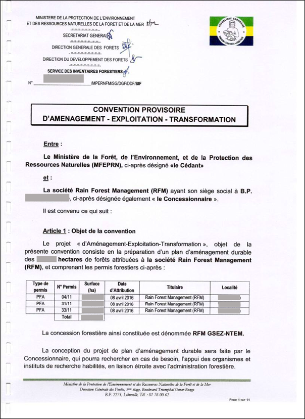
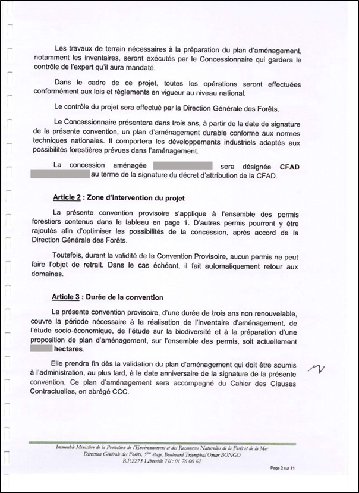
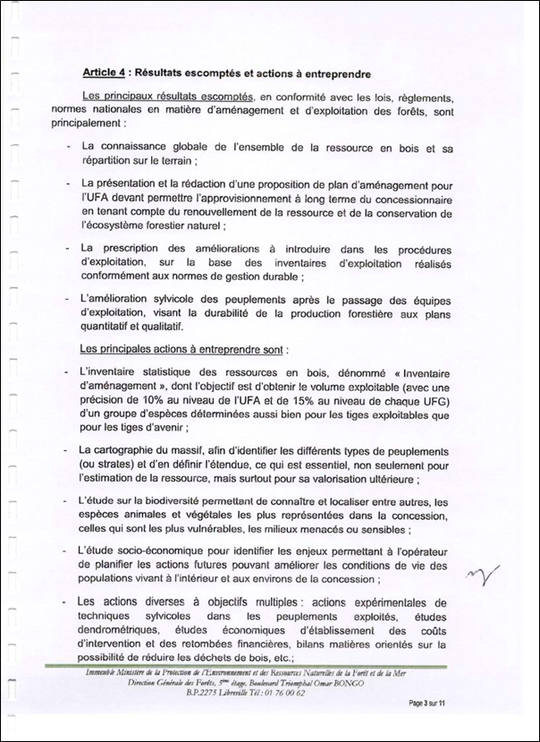
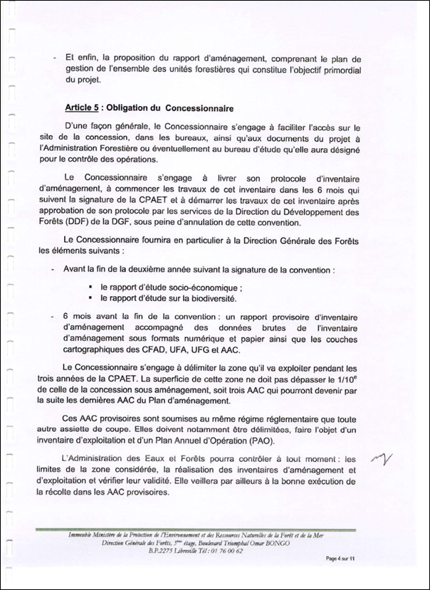
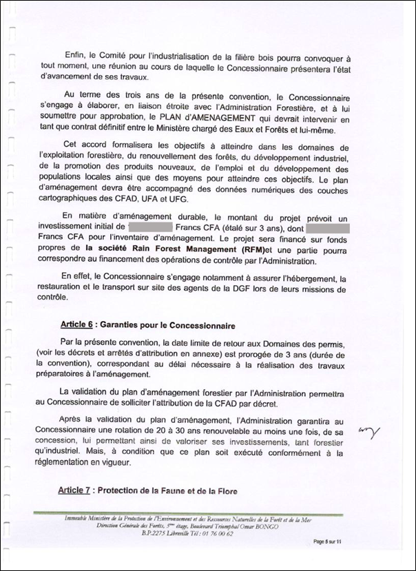
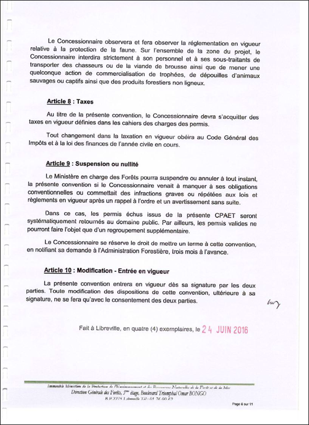
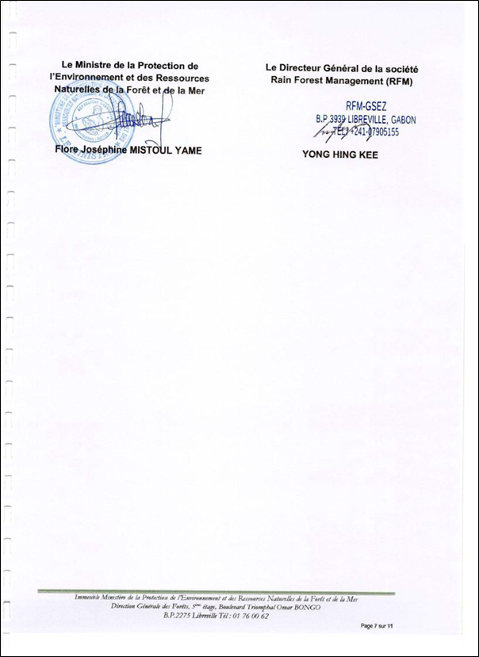
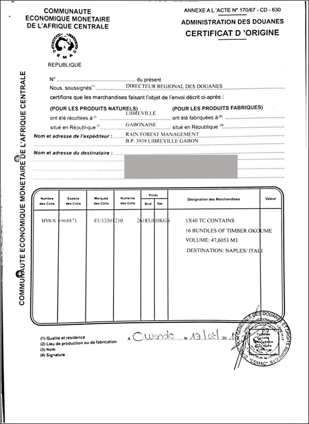

Implementing Timber Leglity Assurance Systems
A guide to comply with timber legality requirements in Gabon and to support due diligence


GABON
Quy định gỗ hợp pháp của Ga-bông
Ga-bông đang đàm phán Hiệp định Đối tác Tự nguyện với Liên minh Châu u. Tuy nhiên, một hệ thống bảo đảm tính hợp pháp của gỗ chưa được phát triển tại quốc gia này và có nhiều rủi ro xác định cho nhà nhập khẩu gỗ. Việc tuân thủ luật pháp quốc gia và giúp ngăn chặn việc nhập khẩu gỗ bất hợp pháp vào các quốc gia khác phụ thuộc nhiều vào việc Chính phủ phát triển một hệ thống kiểm soát và xác minh hiệu quả, các nhà điều hành tuân thủ các quy định pháp luật và tiến hành trách nhiệm giải trình. Bằng cách nhận thức được các quy định pháp luật ở Ga-Bông được nêu rõ dưới đây, các cơ quan thực thi pháp luật và các nhà nhập khẩu có thể thực hiện các biện pháp kiểm soát để thúc đẩy gỗ được khai thác, vận chuyển và buôn bán hợp pháp từ Ga-Bông. Các nhà nhập khẩu và cơ quan xác minh có thể tham khảo hoặc sử dụng thông tin này trong việc thực hiện trách nhiệm giải trình.
Gợi ý xây dựng và thực hiện trách nhiệm giải trình cho các nhà nhập khẩu
Trách nhiệm giải trình là gì ?

Phát triển hệ thống trách nhiệm giải trình
Thực hiện trách nhiệm giải trình
Các tài liệu sau đây được chọn theo định nghĩa gỗ hợp pháp của Ga-Bông và/ hoặc các quy định pháp luật trong các giai đoạn khác nhau của chuỗi cung ứng.
Thỏa thuận phát triển - khai thác – chuyển đổi tạm thời
Thỏa thuận phát triển - khai thác – chuyển đổi tạm thời (Convention provisoire d’aménagement - exploitation – transformation) phải do Bộ trưởng Bộ Nước, Rừng, Biển và Môi trường (Ministère des eaux, des forets, de la mer et de l'environnement) và Đại diện Công ty lâm nghiệp ký, đóng dấu. Cần kiểm tra chữ ký, con dấu hợp lệ, tên và địa chỉ công ty lâm nghiệp, diện tích nhượng quyền, thời hạn thỏa thuận.
      Phê duyệt kế hoạch hoạt động hàng năm
Kế hoạch hoạt động hàng năm được Giám đốc Sở Nước, Rừng, Biển và Môi trường cấp tỉnh ký, đóng dấu phê duyệt. Cần kiểm tra chữ ký, con dấu hợp lệ, số lượng, diện tích chặt hạ hàng năm.
Quyết định phê duyệt kế hoạch phát triển
Quyết định phê duyệt kế hoạch phát triển phải do Bộ trưởng Bộ Thủy lợi và Lâm nghiệp (nay là Bộ Nước, Rừng, Biển và Môi trường) ký, đóng dấu cấp cho công ty lâm nghiệp. Cần kiểm tra chữ ký, con dấu, số và ngày ký, thời gian thực hiện kế hoạch, tên công ty lâm nghiệp trên quyết định.
Phê duyệt kế hoạch quản lý
Phê duyệt kế hoạch quản lý phải do Tổng cục trưởng Tổng cục Lâm nghiệp ký, đóng dấu cho kế hoạch quản lý 5 năm của đơn vị quản lý rừng (UFG). Cầnkiểm tra chữ ký, con dấu, tên và địa chỉ công ty, số lượng và vị trí UFG, thời hạn thực hiện.
Giấy chứng nhận tuân thủ kế hoạch phát triển công nghiệp
Giấy chứng nhận tuân thủ kế hoạch phát triển công nghiệp phải do Tổng cục trưởng Tổng cục Công thương gỗ và định giá lâm sản ký, đóng dấu cấp cho công ty lâm nghiệp. Cần kiểm tra chữ ký, con dấu, số và ngày ký giấy chứng nhận.
Tuyên bố xác nhận Báo cáo quản lý tồn trữ
Tuyên bố xác nhận Báo cáo quản lý tồn trữ phải do Tổng cục trưởng Tổng cục Lâm nghiệp ký, đóng dấu, cấp cho công ty lâm nghiệp. Cần kiểm tra chữ ký, con dấu, ngày ký trên bản tuyên bố, tên và địa chỉ công ty lâm nghiệp, số lượng/diện tích rừng được giao.
Địa điểm khai thác gỗ
Địa điểm khai thác gỗ phải do Giám đốc Sở Nước, Rừng, Biển và Môi trường cấp tỉnh ký, đóng dấu cấp cho công ty lâm nghiệp. Cần kiểm tra số giấy phép, số lô, địa điểm, loài, số cây, ngày chặt hạ.
Báo cáo cuộc họp cộng đồng
Báo cáo cuộc họp cộng đồng phải do Cục trưởng Cục lâm nghiệp cấp tỉnh ký, đóng dấu. Cần kiểm tra chữ ký, con dấu, cộng đồng địa phương và nhóm dân cư, ngày và địa điểm họp, danh sách và chữ ký người tham dự.
Giấy phép CITES
Giấy phép CITES phải do Tổng cục trưởng Tổng cục các khu Bảo tồn và động vật hoang dã (DGFAP) ký, đóng dấu, cấp cho nhà xuất khẩu các loài gỗ CITES. Cần kiểm tra tính hợp lệ, chữ ký và con dấu, tên của chủ gỗ, loài và khối lượng trên giấy phép.
Biên lai thuế
Biên lai thuế phải do cán bộ thuế địa phương ký. Cần kiểm tra tên và địa chỉ công ty, bản chất thanh toán, số tiền thanh toán.
Biên lai hải quan
Biên lai hải quan phải do Cơ quan Hải quan ký xác nhận nhà xuất khẩu/ nhập khẩu hoàn thành nghĩa vụ hải quan. Cần kiểm tra chữ ký, con dấu, ngày ký của cơ quan Hải quan, đối chiếu số lượng, trọng lượng, khối lượng với thực tế.
Biên lai tải hàng
Biên lai tải hàng phải do công ty vận chuyển ký, cấp cho công ty lâm nghiệp. Cần kiểm tra chữ ký, con dấu, ngày ký, đối chiếu tên, địa chỉ công ty lâm nghiệp, số lượng, trọng lượng hàng thực tế.
Phiếu xuất kho
Phiếu xuất kho phải do Trưởng bến xe/ cảng tàu ký, cấp cho công ty lâm nghiệp. Cần kiểm tra tên và địa chỉ công ty, tên người mua, mô tả lô hàng (loài, số lượng), địa điểm, số lượng xe/toa tàu.
Giấy phép lộ trình
Giấy phép lộ trình phải do Sở Thủy lợi và Lâm nghiệp ký, cấp cho công ty lâm nghiệp. Cần kiểm tra tên và địa chỉ công ty nhận hàng, số giấy phép, ngày khởi hành, nơi đến, mô tả lô hàng (số lóng/pallet…).
Giấy chứng nhận xuất xứ
Giấy chứng nhận xuất xứ phải do Cục trưởng Cục Hải quan CEMAC (Cộng đồng Kinh tế và Tiền tệ Trung Phi) khu vực ký, cấp cho công ty lâm nghiệp. Cần kiểm tra nơi tập kết/ sản xuất, nước xuất xứ, công ty vận chuyển, địa chỉ người nhận, mô tả lô hàng (số lượng, trọng lượng, loài gỗ, giá trị hàng…).
Lệnh quá cảnh
Lệnh quá cảnh phải do đại lý xuất khẩu ký, cấp cho công ty lâm nghiệp. Cần kiểm tra tên, địa chỉ công ty lâm nghiệp/người mua, mô tả lô hàng (số lượng, trọng lượng, loại sản phẩm).
Đơn đăng ký các cơ quan quốc gia về xúc tiến đầu tư
Đơn đăng ký phải do Cục trưởng Cục quản lý doanh nghiệp, Cục đăng ký thương mại, Cục đăng ký của Tổng cục Thuế và Cơ quan quản lý ANPI-Gabon ký, đóng dấu cấp cho công ty gỗ. Cần kiểm tra thời hạn, chữ ký, con dấu của các cơ quan, số đăng ký thuế, số người nộp thuế trong sổ đăng ký thương mại.
Sổ đăng ký thương mại
Doanh nghiệp đăng ký vào Sổ đăng ký thương mại. Cần kiểm tra chữ ký, con dấu, số đăng ký, loại hình hoạt động, ngày bắt đầu hoạt động.
Phê duyệt báo cáo nghiên cứu kinh tế xã hội
Báo cáo nghiên cứu kinh tế xã hội phải do Tổng cục trưởng Tổng cục Lâm nghiệp ký phê duyệt cho Chủ sở hữu rừng nhượng quyền được quản lý bền vững (CFAD). Cần kiểm tra chữ ký, con dấu, ngày ký, số CFAD, nội dung tài liệu nghiên cứu.
Phê duyệt báo cáo nghiên cứu tác động môi trường
Báo cáo nghiên cứu tác động môi trường phải do Tổng cục trưởng Tổng cục Môi trường và Bảo vệ Thiên nhiên ký phê duyệt cho công ty lâm nghiệp. Cần kiểm tra chữ ký, con dấu, ngày ký, số quyết định, tên và địa chỉ công ty.
Biên lai an sinh xã hội
Biên lai an sinh xã hội phải do Cơ quan Quỹ An sinh xã hội quốc gia (CNSS) ký, đóng dấu cấp cho các công ty gỗ. Cần kiểm tra tên công ty, số tiền đóng, ngày thu, phương thức thanh toán, chữ ký và con dấu.
Biên bản họp của Ủy ban an toàn và vệ sinh lao động
Biên bản họp của Ủy ban an toàn và vệ sinh lao động được Giám đốc công ty, Cục trưởng Cục Lao động khu vực, đại diện người lao động ký. Cần kiểm tra ngày và địa điểm họp, tên các thành viên.
Hợp đồng lao động
Hợp đồng lao động phải do công ty lập ra và có chữ ký của người sử dụng lao động và người lao động. Cần kiểm tra nội dung hợp đồng, thông tin, chữ ký và con dấu đầy đủ, chính xác.